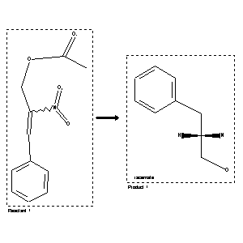

 |
| FA | RX(1); FLST(1); RX(1) |
Reaction (1 of 1)
| Reaction ID | 366090 |
| Reactant BRN | 2531592 |
| Reactant | acetic acid-(b-nitro-cinnamyl ester) |
| Product BRN | 3197506 |
| Product | (+-)-2-amino-1-phenyl-propanol-(3) |
| No. of Reaction Details | 1 |
Reaction Details (1 of 1)
| Reaction Classification | Preparation |
| Reagent | LiAlH4 |
| Comment | Handbook |
| Citation Pointer | 2263163; Journal; Kovacs et al.; Acta Univ.Szeged<NS>; 2; 1956; 111,114; |
Reference (1 of 1)
| Citation Number | 2263163 |
| Document Type | Journal |
| Authors | Kovacs et al. |
| Journal/Review Without CODEN | Acta Univ.Szeged<NS> |
| (Series) Volume | 2 |
| Publication Year | 1956 |
| Page | 111,114 |